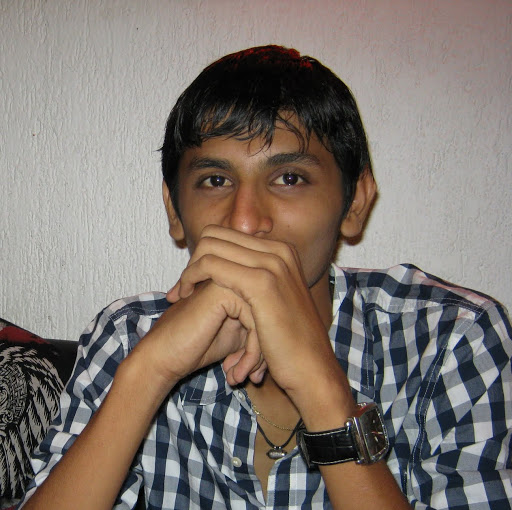
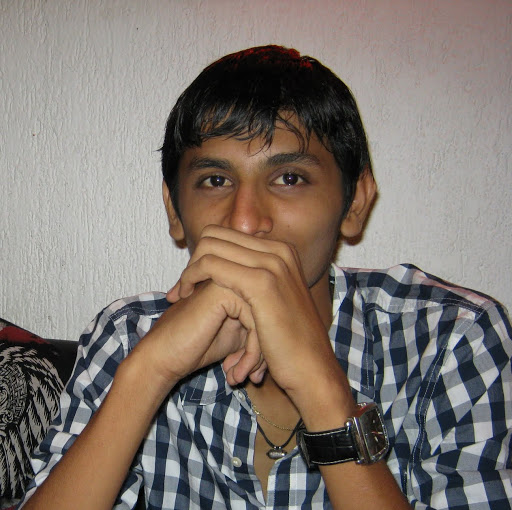

Kunal Sutaria


-
About Me
I am an inspired, creative, self-learner. I love tinkering around with electronics and learning about what they do. My short term goals include teaching myself basic electronics and making my own projects. My long term goals include applying for entry to Missouri University of Science and Technology and enrolling in their Computer Engineering department. After that, I hope to make the world a better place to live by creating devices that will increase security , safety, and living conditions across the globe. -
What I Need
- TIP 120 Transistors
- Breadboard
- Raspberry Pi
- Arduino Uno
What I Have
- PC Motherboards
- LEDs
- Switches
- Monitors
-
My Projects
-
Location